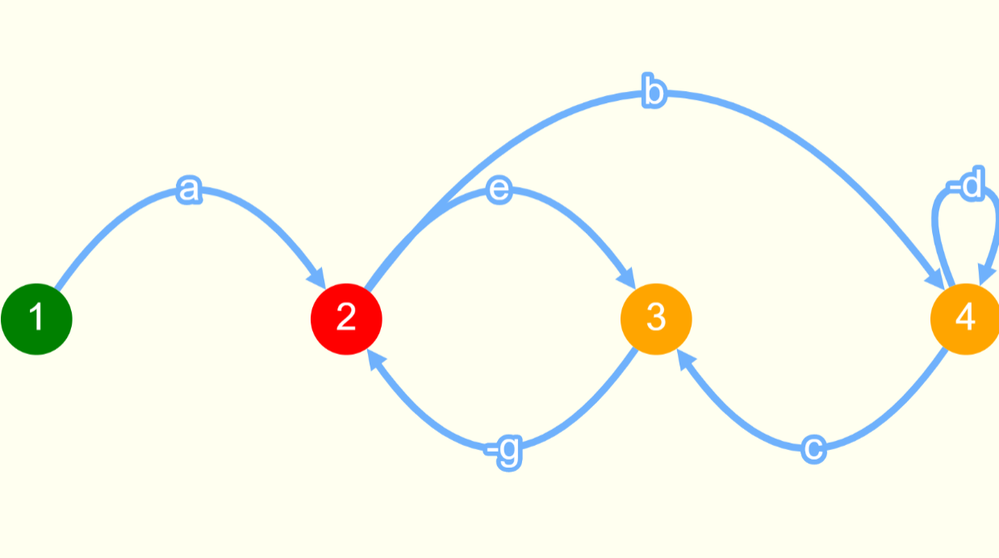

Signal Flow Example
Consider the following signal flow graph example when feeded the same example in the algorithm developed by us we got the same results which are depicted in the images below
With the help of Mason’s gain formula we calculated the transfer function of this signal flow graph. The result by our algorithm are depicted below
